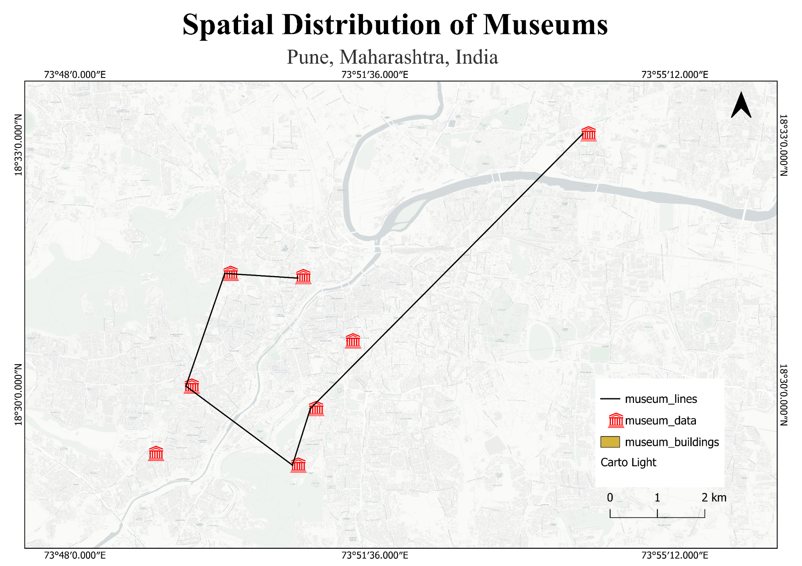

GEOGRAPHIC OVERVIEW
Pune Museum Dashboard
Summary indicators derived from the museum dataset and PostGIS spatial analysis.
⌂
Mapping Pune's museum heritage
The dashboard combines point locations, connection lines and museum-building polygons to show how selected museums are distributed across Pune.
INTERACTIVE WEBGIS
Explore the Museum Map
Click a museum marker for details, search for a museum, and switch between satellite and street basemaps.
N
▲
Default basemap: Esri World Imagery (satellite) · Use the layer control to switch to OpenStreetMap or show/hide GeoServer layers.
POSTGIS ANALYSIS
Spatial Patterns & Statistics
Charts summarize the geographic distribution and nearest-neighbour relationships in the museum dataset.
01
Museums by Geographic Region
The custom classification contains three museums in Northern Pune, three in Central Pune and two in Southern Pune.
02
Nearest Museum Distance
The chart compares straight-line distance from each museum to its nearest museum. These are geographic distances, not road travel distances.
KEY FINDINGS
Spatial observations
WEBGIS WORKFLOW
From database to browser
PostgreSQL / PostGIS→GeoServer→WMS→Leaflet
FINAL CARTOGRAPHIC OUTPUT
Spatial Distribution of Museums
The final QGIS layout presents the point, line and polygon datasets with cartographic map elements.

Final Map LayoutTitle · Legend · North arrow · Scale · Coordinate grid · Point, line & polygon layers
MUSEUM DATASET
Museum Directory
Click any row to locate that museum on the interactive map.
| Museum | Area / Address | Latitude | Longitude | Region |
|---|
ABOUT THE PROJECT
Heritage mapping through Geoinformatics
This academic WebGIS project demonstrates an end-to-end geospatial workflow for Pune museum data: spatial data stored and analysed in PostgreSQL/PostGIS, published through GeoServer, and visualized through an interactive web map.
The project brings database analysis and cartographic design together in one heritage-themed dashboard.
BK
Prepared by
Bhakti Kamble
Geoinformatics Student
PostGIS · GeoServer · QGIS · WebGIS